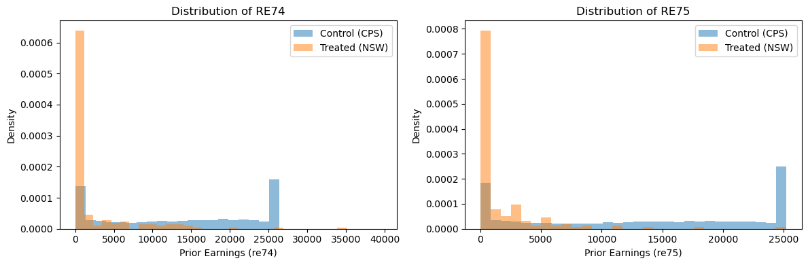
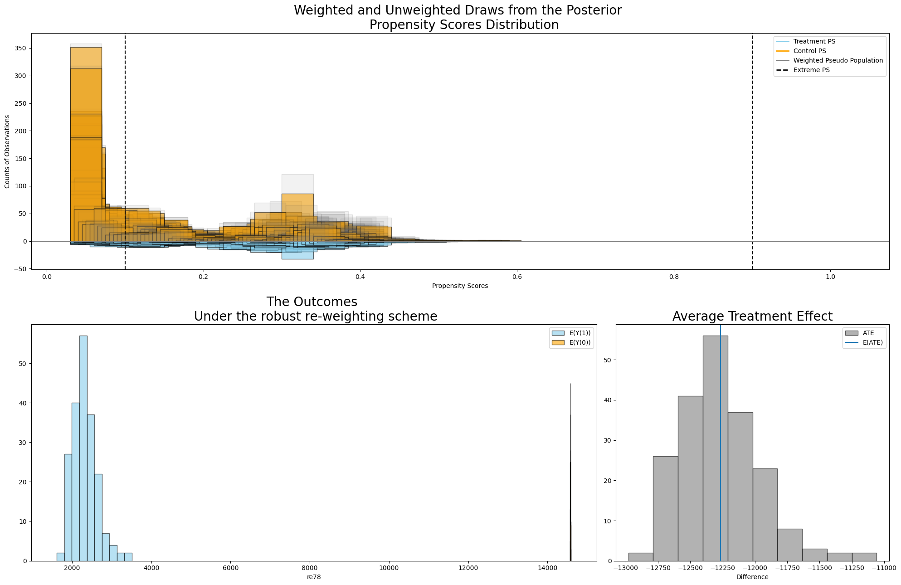
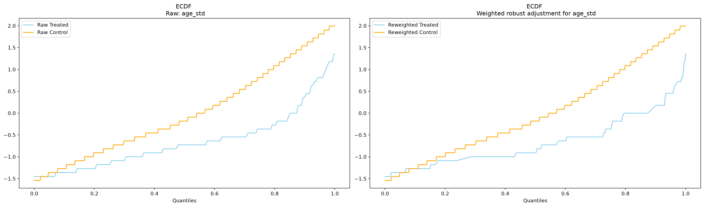
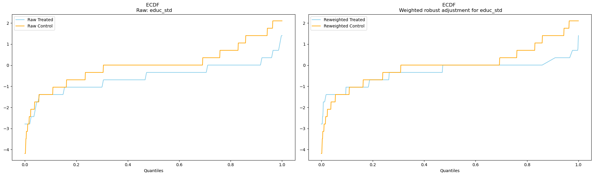

import warnings
warnings.filterwarnings("ignore")
import numpy as np
import pandas as pd
import matplotlib.pyplot as plt
import causalpy as cp
# Add the src directory to path for our data utilities
import sys
sys.path.insert(0, "../src")
from mixtape_causalpy import load_nsw, load_cps, load_mixtape_data
%matplotlib inlineChapter 5: Matching and Subclassification
Causal Inference: The Mixtape → CausalPy
Mixtape chapter: Matching and Subclassification
CausalPy method: InversePropensityWeighting
Overview
Matching and related methods aim to create comparable treatment and control groups by balancing observed covariates. This chapter covers several approaches:
- Simple difference in outcomes (Titanic example)
- Experimental benchmark (NSW randomized experiment)
- Inverse Propensity Weighting (CausalPy’s approach)
What we’ll cover
- Conceptual introduction with the Titanic example
- Experimental ATE as a benchmark using NSW data
- IPW estimation using CausalPy with the LaLonde observational data
- Balance diagnostics and propensity score overlap
CausalPy Support
CausalPy provides InversePropensityWeighting for propensity score-based estimation. Other matching methods (nearest neighbor, subclassification, coarsened exact matching) are not yet supported.
Mixtape files implemented
| File | Description | Status |
|---|---|---|
titanic.py |
Simple difference in outcomes | ✅ (conceptual) |
nsw_experimental.py |
NSW experimental benchmark | ✅ |
nsw_pscore.py |
Propensity score estimation | ✅ |
ipw.py |
Inverse propensity weighting | ✅ |
teffects_ipw.py |
Treatment effects via IPW | ✅ |
titanic_subclassification.py |
Subclassification | ⏭️ (no CausalPy) |
training_example.py |
Training program example | ⏭️ (no CausalPy) |
training_bias_reduction.py |
Bias reduction via matching | ⏭️ (no CausalPy) |
teffects_nn.py |
Nearest neighbor matching | ⏭️ (missing) |
cem.py |
Coarsened exact matching | ⏭️ (missing) |
Setup
Example 1: Simple Difference in Outcomes (Titanic)
Before diving into propensity scores, let’s illustrate the fundamental problem with a simple example from the Titanic disaster.
Question: Did being in first class improve survival?
A naive comparison of survival rates between first and other classes gives us the simple difference in outcomes (SDO). But this comparison may be confounded by other factors (e.g., cabin location, access to lifeboats).
# Load Titanic data
titanic = load_mixtape_data("titanic.dta")
print(f"Dataset shape: {titanic.shape}")
titanic.head()Dataset shape: (2201, 4)| class | age | sex | survived | |
|---|---|---|---|---|
| 0 | 1st class | adults | man | yes |
| 1 | 1st class | adults | man | yes |
| 2 | 1st class | adults | man | yes |
| 3 | 1st class | adults | man | yes |
| 4 | 1st class | adults | man | yes |
# Create binary variables (as in titanic.py)
titanic["first_class"] = (titanic["class"] == "1st class").astype(int)
titanic["survived_d"] = (titanic["survived"] == "yes").astype(int)
# Simple difference in outcomes
ey1 = titanic.loc[titanic["first_class"] == 1, "survived_d"].mean()
ey0 = titanic.loc[titanic["first_class"] == 0, "survived_d"].mean()
sdo = ey1 - ey0
print(f"Survival rate (1st class): {ey1:.1%}")
print(f"Survival rate (other): {ey0:.1%}")
print(f"\nSimple Difference in Outcomes: {sdo:.1%}")
print("\nThis is NOT necessarily the causal effect - it may be confounded!")Survival rate (1st class): 62.5%
Survival rate (other): 27.1%
Simple Difference in Outcomes: 35.4%
This is NOT necessarily the causal effect - it may be confounded!Example 2: NSW Experimental Benchmark
The National Supported Work (NSW) demonstration was a randomized job training program in the 1970s. Because treatment was randomly assigned, the simple difference in outcomes is an unbiased estimate of the Average Treatment Effect (ATE).
This experimental estimate serves as a benchmark for evaluating observational methods. LaLonde (1986) famously showed that many observational estimators failed to recover this experimental benchmark when using non-experimental control groups.
Outcome: Real earnings in 1978 (re78)
# Load NSW experimental data
nsw = load_nsw()
print(f"NSW experimental data shape: {nsw.shape}")
print(f"\nTreatment distribution:")
print(nsw["treat"].value_counts())NSW experimental data shape: (445, 11)
Treatment distribution:
treat
0.0 260
1.0 185
Name: count, dtype: int64# Key variables
print("Key variables:")
print(
nsw[
[
"treat",
"age",
"educ",
"black",
"hisp",
"marr",
"nodegree",
"re74",
"re75",
"re78",
]
].describe()
)Key variables:
treat age educ black hisp marr \
count 445.000000 445.000000 445.000000 445.000000 445.00000 445.000000
mean 0.415730 25.370787 10.195505 0.833708 0.08764 0.168539
std 0.493402 7.100282 1.792119 0.372762 0.28309 0.374766
min 0.000000 17.000000 3.000000 0.000000 0.00000 0.000000
25% 0.000000 20.000000 9.000000 1.000000 0.00000 0.000000
50% 0.000000 24.000000 10.000000 1.000000 0.00000 0.000000
75% 1.000000 28.000000 11.000000 1.000000 0.00000 0.000000
max 1.000000 55.000000 16.000000 1.000000 1.00000 1.000000
nodegree re74 re75 re78
count 445.000000 445.000000 445.000000 445.000000
mean 0.782022 2102.265381 1377.138306 5300.764160
std 0.413337 5363.582520 3150.960693 6631.491699
min 0.000000 0.000000 0.000000 0.000000
25% 1.000000 0.000000 0.000000 0.000000
50% 1.000000 0.000000 0.000000 3701.812012
75% 1.000000 824.388916 1220.836060 8124.714844
max 1.000000 39570.679688 25142.240234 60307.929688 # Calculate experimental ATE (as in nsw_experimental.py)
mean_treated = nsw[nsw["treat"] == 1]["re78"].mean()
mean_control = nsw[nsw["treat"] == 0]["re78"].mean()
experimental_ate = mean_treated - mean_control
print(f"Mean earnings (treated): ${mean_treated:,.2f}")
print(f"Mean earnings (control): ${mean_control:,.2f}")
print(f"\n*** Experimental ATE: ${experimental_ate:,.2f} ***")
print("\nThis is our benchmark - observational methods should try to recover this.")Mean earnings (treated): $6,349.14
Mean earnings (control): $4,554.80
*** Experimental ATE: $1,794.34 ***
This is our benchmark - observational methods should try to recover this.Example 3: Inverse Propensity Weighting with CausalPy
Now we’ll use CausalPy’s InversePropensityWeighting to estimate the treatment effect using an observational control group (CPS data) instead of the experimental control group.
The Challenge
When we replace the experimental control group with CPS controls, the simple difference in outcomes will be heavily biased because the CPS sample differs systematically from NSW participants (in age, education, earnings history, etc.).
The Solution
Inverse Propensity Weighting (IPW) reweights observations to create a “pseudo-population” where treatment assignment is independent of observed covariates.
# Load CPS control data
cps = load_cps()
print(f"CPS data shape: {cps.shape}")CPS data shape: (15992, 11)# Combine NSW with CPS controls (as in ipw.py)
# The Mixtape uses the FULL NSW data (both treated and control from the experiment)
# combined with CPS controls, then uses treat indicator to distinguish groups
combined = pd.concat([cps, nsw], ignore_index=True)
# Create unemployment indicators (as in original code)
combined["u74"] = (combined["re74"] == 0).astype(int)
combined["u75"] = (combined["re75"] == 0).astype(int)
print(f"Combined dataset shape: {combined.shape}")
print(f"\nTreatment distribution:")
print(combined["treat"].value_counts())Combined dataset shape: (16437, 13)
Treatment distribution:
treat
0.0 16252
1.0 185
Name: count, dtype: int64# Show the bias without adjustment
naive_mean_treated = combined[combined["treat"] == 1]["re78"].mean()
naive_mean_control = combined[combined["treat"] == 0]["re78"].mean()
naive_diff = naive_mean_treated - naive_mean_control
print("Without any adjustment (naive comparison):")
print(f"Mean earnings (NSW treated): ${naive_mean_treated:,.2f}")
print(f"Mean earnings (CPS control): ${naive_mean_control:,.2f}")
print(f"Naive difference: ${naive_diff:,.2f}")
print(f"\nExperimental benchmark: ${experimental_ate:,.2f}")
print(f"Bias: ${naive_diff - experimental_ate:,.2f} (way off!)")Without any adjustment (naive comparison):
Mean earnings (NSW treated): $6,349.14
Mean earnings (CPS control): $14,682.01
Naive difference: $-8,332.87
Experimental benchmark: $1,794.34
Bias: $-10,127.21 (way off!)Visualize Covariate Imbalance
Before applying IPW, let’s see how different the treated and control groups are:
# Compare means by treatment group
covariates = ["age", "educ", "black", "hisp", "marr", "nodegree", "re74", "re75"]
balance_table = combined.groupby("treat")[covariates].mean().T
balance_table.columns = ["Control (CPS)", "Treated (NSW)"]
balance_table["Difference"] = (
balance_table["Treated (NSW)"] - balance_table["Control (CPS)"]
)
print("Covariate Balance (before weighting):")
print(balance_table.round(2))Covariate Balance (before weighting):
Control (CPS) Treated (NSW) Difference
age 33.090000 25.820000 -7.280000
educ 12.000000 10.350000 -1.650000
black 0.090000 0.840000 0.760000
hisp 0.070000 0.060000 -0.010000
marr 0.700000 0.190000 -0.510000
nodegree 0.300000 0.710000 0.400000
re74 13826.269531 2095.570068 -11730.690430
re75 13452.679688 1532.060059 -11920.629883# Visualize prior earnings distributions
fig, axes = plt.subplots(1, 2, figsize=(12, 4))
for i, var in enumerate(["re74", "re75"]):
ax = axes[i]
ax.hist(
combined[combined["treat"] == 0][var],
bins=30,
alpha=0.5,
label="Control (CPS)",
density=True,
)
ax.hist(
combined[combined["treat"] == 1][var],
bins=30,
alpha=0.5,
label="Treated (NSW)",
density=True,
)
ax.set_xlabel(f"Prior Earnings ({var})")
ax.set_ylabel("Density")
ax.legend()
ax.set_title(f"Distribution of {var.upper()}")
plt.tight_layout()
plt.show()
print("Note: NSW participants had much lower prior earnings than CPS controls!")
Note: NSW participants had much lower prior earnings than CPS controls!CausalPy Inverse Propensity Weighting
Now we’ll use CausalPy to estimate propensity scores and compute the IPW-adjusted treatment effect.
CausalPy’s InversePropensityWeighting supports several weighting schemes: - raw: Simple inverse probability weighting - robust: Horvitz-Thompson type weighting - doubly robust: Combines propensity and outcome models - overlap: Targets the overlap population
# Prepare data for CausalPy
ipw_data = combined.copy()
# Ensure treat is 0/1 integer
ipw_data["treat"] = ipw_data["treat"].astype(int)
# Standardize continuous variables to help MCMC sampling
# Earnings are on very different scales (0 to ~40,000) which can cause divergences
ipw_data["age_std"] = (ipw_data["age"] - ipw_data["age"].mean()) / ipw_data["age"].std()
ipw_data["educ_std"] = (ipw_data["educ"] - ipw_data["educ"].mean()) / ipw_data[
"educ"
].std()
ipw_data["re74_std"] = (ipw_data["re74"] - ipw_data["re74"].mean()) / ipw_data[
"re74"
].std()
ipw_data["re75_std"] = (ipw_data["re75"] - ipw_data["re75"].mean()) / ipw_data[
"re75"
].std()
# Check for missing values in key columns
key_cols = [
"treat",
"age",
"educ",
"black",
"hisp",
"marr",
"nodegree",
"re74",
"re75",
"u74",
"u75",
"re78",
]
print(f"Missing values:\n{ipw_data[key_cols].isnull().sum()}")
print(f"\nDataset shape: {ipw_data.shape}")
print(f"\nStandardized variable ranges:")
print(f" age_std: [{ipw_data['age_std'].min():.2f}, {ipw_data['age_std'].max():.2f}]")
print(
f" educ_std: [{ipw_data['educ_std'].min():.2f}, {ipw_data['educ_std'].max():.2f}]"
)
print(
f" re74_std: [{ipw_data['re74_std'].min():.2f}, {ipw_data['re74_std'].max():.2f}]"
)
print(
f" re75_std: [{ipw_data['re75_std'].min():.2f}, {ipw_data['re75_std'].max():.2f}]"
)Missing values:
treat 0
age 0
educ 0
black 0
hisp 0
marr 0
nodegree 0
re74 0
re75 0
u74 0
u75 0
re78 0
dtype: int64
Dataset shape: (16437, 17)
Standardized variable ranges:
age_std: [-1.54, 1.99]
educ_std: [-4.18, 2.10]
re74_std: [-1.42, 2.67]
re75_std: [-1.42, 1.27]# Run CausalPy IPW with robust weighting
sample_kwargs = {
"tune": 1000,
"draws": 500,
"chains": 4,
"cores": 4,
"target_accept": 0.99, # Higher target_accept for this challenging problem
"progressbar": True,
}
# Propensity score formula using STANDARDIZED continuous variables
# This helps MCMC sampling converge better (avoids divergences from large scale differences)
ipw_result = cp.InversePropensityWeighting(
ipw_data,
formula="treat ~ 1 + age_std + educ_std + black + hisp + marr + nodegree + re74_std + re75_std + u74 + u75",
outcome_variable="re78",
weighting_scheme="robust",
model=cp.pymc_models.PropensityScore(sample_kwargs=sample_kwargs),
)Initializing NUTS using jitter+adapt_diag...
Multiprocess sampling (4 chains in 4 jobs)
NUTS: [b]Sampling 4 chains for 1_000 tune and 500 draw iterations (4_000 + 2_000 draws total) took 40 seconds.
Sampling: [b, t_pred]
Sampling: [t_pred]# Plot the results - propensity score distribution and ATE
fig, axs = ipw_result.plot_ate(prop_draws=50, ate_draws=200)
plt.tight_layout()
plt.show()
# Extract ATE estimates
ate_samples = [
ipw_result.get_ate(i, ipw_result.model.idata, method="robust")[0]
for i in range(200)
]
ate_mean = np.mean(ate_samples)
ate_std = np.std(ate_samples)
print("IPW Results (Robust Weighting):")
print(f" Estimated ATE: ${ate_mean:,.2f}")
print(f" Std Dev: ${ate_std:,.2f}")
print(
f" 95% CI: [${ate_mean - 1.96 * ate_std:,.2f}, ${ate_mean + 1.96 * ate_std:,.2f}]"
)
print(f"\nExperimental benchmark: ${experimental_ate:,.2f}")IPW Results (Robust Weighting):
Estimated ATE: $-12,264.54
Std Dev: $307.47
95% CI: [$-12,867.18, $-11,661.90]
Experimental benchmark: $1,794.34Balance Diagnostics
CausalPy provides tools to check whether the weighting achieves covariate balance:
# Check balance for age covariate (using standardized variable)
fig, axs = ipw_result.plot_balance_ecdf("age_std")
plt.tight_layout()
plt.show()
# Check balance for education (using standardized variable)
fig, axs = ipw_result.plot_balance_ecdf("educ_std")
plt.tight_layout()
plt.show()
Comparison to Mixtape Results
Key Differences
| Aspect | Mixtape | This Notebook |
|---|---|---|
| Propensity model | Logistic regression (statsmodels) | Bayesian logistic (PyMC) |
| Weighting | Manual Horvitz-Thompson | CausalPy robust scheme |
| Uncertainty | Bootstrap or asymptotic | Bayesian posterior |
| Specification | Polynomial terms + interactions | Linear in covariates |
The LaLonde Problem
The famous LaLonde (1986) paper showed that observational estimators often fail to recover the experimental benchmark. The NSW treated group was very different from CPS controls:
- Lower prior earnings: NSW participants were disadvantaged workers
- Different demographics: More minority, less educated
- Selection into treatment: Voluntary program participation
IPW attempts to correct for these differences by reweighting, but: - Limited overlap can cause extreme weights - Model misspecification affects results - No adjustment for unobservables
TODO: Subclassification
Not yet implemented: Subclassification stratifies observations into propensity score bins and estimates effects within each stratum.
Mixtape reference: titanic_subclassification.py
CausalPy tracking: No current issue/PR for subclassification
When to revisit: Would need a new method in CausalPy.
TODO: Nearest Neighbor Matching
Not yet implemented: Nearest neighbor matching pairs treated units with similar control units based on propensity scores or covariates.
Mixtape reference: teffects_nn.py (file is empty in original repo)
CausalPy tracking: No current issue/PR for matching
When to revisit: Would need a new cp.Matching experiment class.
TODO: Coarsened Exact Matching (CEM)
Not yet implemented: CEM temporarily coarsens covariates and performs exact matching within coarsened strata.
Mixtape reference: cem.py (file is empty in original repo)
CausalPy tracking: No current issue/PR for CEM
When to revisit: Would need a new experiment class in CausalPy.
Summary
In this notebook, we demonstrated:
Simple Difference in Outcomes: The Titanic example shows that naive comparisons can be misleading when treatment is not randomly assigned.
Experimental Benchmark: The NSW randomized experiment provides an unbiased ATE estimate (~$1,794) that serves as our ground truth.
The LaLonde Problem: When we substitute CPS controls for the experimental controls, the naive difference is heavily biased (negative!).
CausalPy IPW: Using
InversePropensityWeighting, we attempted to recover the experimental benchmark by reweighting observations based on their probability of treatment.
Key takeaways:
- IPW is one approach to addressing selection bias in observational studies
- CausalPy provides Bayesian propensity score estimation with uncertainty quantification
- Balance diagnostics help assess whether weighting achieves covariate balance
- The LaLonde problem remains challenging — observational methods may not fully recover experimental estimates
What CausalPy supports: - ✅ Inverse Propensity Weighting (multiple schemes) - ✅ Propensity score diagnostics - ✅ Balance plots
What’s not yet available: - ❌ Nearest neighbor matching - ❌ Subclassification - ❌ Coarsened exact matching
References
- Mixtape chapter: https://mixtape.scunning.com/05-matching_and_subclassification
- CausalPy docs: https://causalpy.readthedocs.io
- Original papers:
- LaLonde, R. (1986). “Evaluating the Econometric Evaluations of Training Programs with Experimental Data”
- Dehejia, R. & Wahba, S. (1999). “Causal Effects in Nonexperimental Studies: Reevaluating the Evaluation of Training Programs”
- Rosenbaum, P. & Rubin, D. (1983). “The Central Role of the Propensity Score in Observational Studies for Causal Effects”
- Weighting schemes:
- Aronow, P. & Miller, B. (2019). “Foundations of Agnostic Statistics”